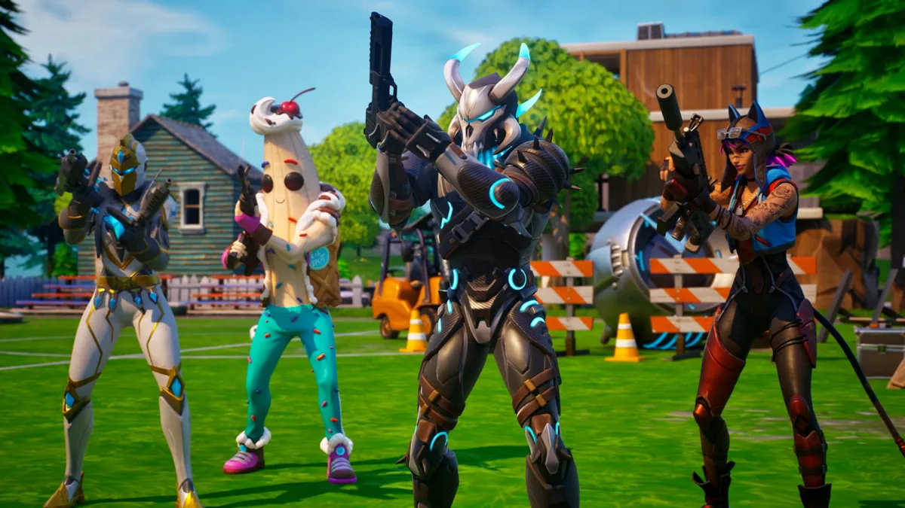

Si pasaste horas y horas con tus amigos en el mapa original de Fortnite cuando Epic Games lo trajo de vuelta el pasado noviembre de 2023, estás de suerte: Fortnite OG ha vuelto para quedarse.
Esta vez no se tratará de un modo temporal, si no de una adición permanente al juego que podrá jugarse siempre como alternativa al modo principal. Pero sus temporadas irán rotando poco a poco, replicando la evolución que el mapa y las mecánicas tuvieron durante las épocas doradas del battle royale.

--------> store.epicgames.com